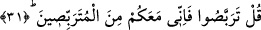
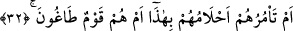

olduğu belirtilmiştir..
Âyet-i kerîmedeki “Raybe” kelimesi mef’ûlü bih olmak üzere mansûbtur. Âyetin
anlamı da; “bilakis onlar zamanın musîbetlerinin onun başına gelip de kendinden önceki
Züheyr, Nâbiğa, Tarfe ve diğerlerini helâk ettiği gibi onu da helâk etmesini mi, yoksa
genç yaşta ölen babası gibi ölüm acılarını tatmasını mı beklediklerini söylüyorlar. Bu
beklenti, öğrencilerin, elinden kurtulmak için öğretmenlerinin ölümünü temenni
etmesine benzer ki kendilerine dini öğreten kişinin ölmesini isteyip de ilm-i yakîni elde
etmekten mahrum kalanlara yazıklar olsun” şeklindedir.
31. De ki: Bekleyin. Ben de sizinle beraber bekleyenlerdenim.
Ben de, beni beklemiş olduğunuz helâki sizler için bekleyeceğim. Âyet-i kerîmedeki
bekleme işi tehdid amacına matûfen getirilmiştir. Râğıb der ki: “Terabbus”un iki anlamı
vardır: Birincisi; bir kişinin pahalanması veya ucuzlama kasdıyla bir ticâret malını
bekletmesidir. İkincisi ise bir kimsenin veya bir şeyin başına gelecek hayır veya şerri
beklemektir. Ayrıca bu âyette onların helâk edileceğine dâir güzel üsluplu bir tehdid de
vardır.
İki tefsir kitabında da bildirildiğine göre bu sözü söyleyen müşriklerin hepsi de
Rasûlullah (s.a.)’den önce ölmüşlerdir. Ayrıca zamanımızda bazı vezirlerin bir kısım
Allah dostlarını hakir görerek sürgüne gönderdiği ve onun helâkini beklediği
görülmüştür. Ancak o velî kullar ölmeden önce onu sürgüne gönderen vezirler,
yanlarındaki binlerce neferiyle birlikte korkunç bir biçimde öldürülmüşlerdir.
Bu âyet-i kerîmede; insanların yaptıkları işlerde, halkı Allah Teâlâ’ya dâvette, kullar
üzerinde vâki olan takdir-i ilâhi husûsunda Allah’a tevekkülde, yine ister kabul
edilenler isterse de reddedilenler olmak üzere O’nun hükümlerine teslimde sebat edip
sabırla beklemeye işâret edilmektedir. Çünkü her şey Allah’ın takdîri üzere cereyan
etmektedir.
32. Onlara akılları mı bunu emreder, yoksa onlar, azgın bir topluluk mudur?
“Onlara akılları mı bunu emreder” Yâni bırak bu boş ve çelişkili sözlerini
söylesinler. Onların arasında bu sözlerden daha kötüsüne müstehak kimseler vardır.
Zira bunu söyleyen kimseler düşük seciyeli ve temyiz sâhibi olmayan insanlardır.
“Ahlâm” kelimesi “akıllar” anlamındadır.
Râğıb şöyle demiştir: “Hilm” hakikatte akıl mânâsında değildir ama müfessirler aklın